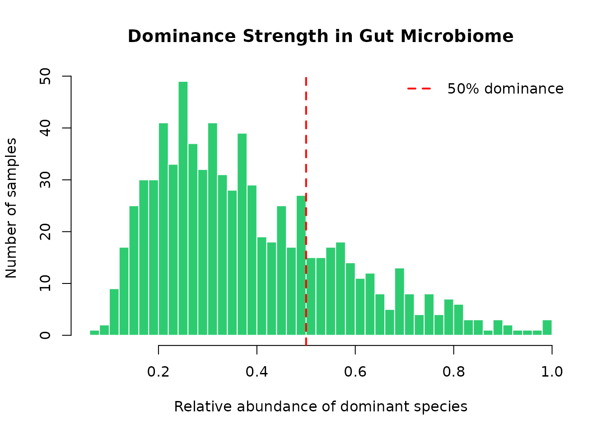
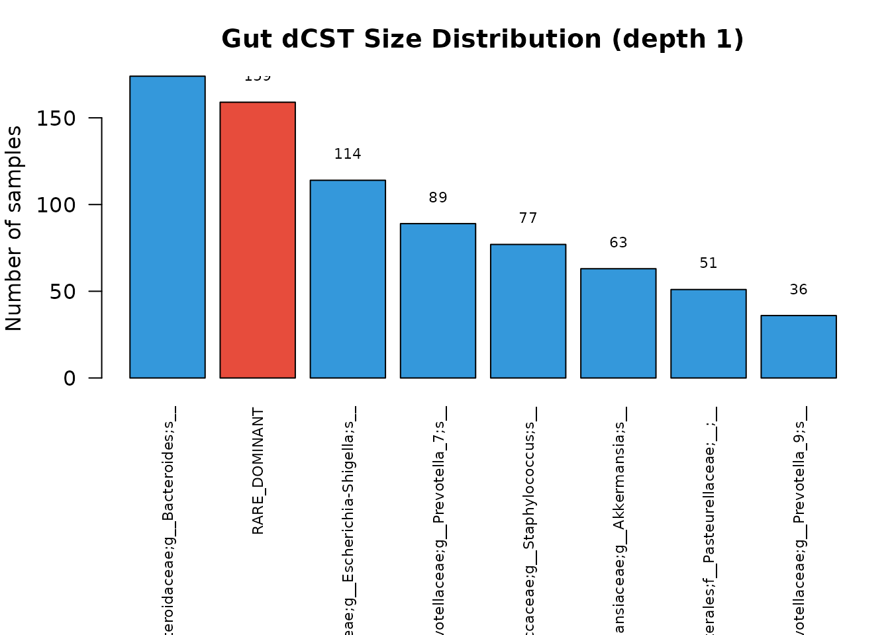

Dominant Community State Types: From Normalization to a Gut Demonstration
Source:vignettes/linf-intro.Rmd
linf-intro.RmdThe linf package implements L-infinity normalization and
Dominant Community State Types (dCSTs) for compositional data. This
vignette demonstrates the complete workflow in two parts: first a
quick-start with toy data to introduce the core functions, then a
real-data analysis of gut microbiome samples from the American Gut
Project showing how to inspect dominant and subdominant community
structure.
Part 1: Quick Start with Toy Data
L-infinity normalization
L-infinity normalization scales each row of a count matrix by its maximum value, projecting samples onto the L-infinity unit ball. Every normalized row has a maximum of exactly 1.
Dominance sample sets
Each sample is assigned to its dominant feature: the column achieving the within-sample maximum. Samples with the same dominant feature form a depth-1 dominance sample set.
dominant.features <- linf.dominant.features(Z)
table(dominant.features$label)
#>
#> Taxon_A Taxon_B Taxon_C
#> 4 4 2Truncated dCSTs
linf.csts() groups samples by dominant feature and
collapses small groups (below threshold n0) into a
RARE_DOMINANT bucket. This produces Dominant Community
State Types (dCSTs).
A <- matrix(c(5, 1, 0), nrow = 6, ncol = 3, byrow = TRUE)
B <- matrix(c(1, 5, 0), nrow = 2, ncol = 3, byrow = TRUE)
C <- matrix(c(1, 0, 5), nrow = 2, ncol = 3, byrow = TRUE)
S <- rbind(A, B, C)
S <- sweep(S, 1, rowSums(S), "/")
colnames(S) <- c("Dom1", "Dom2", "Dom3")
res <- linf.csts(S, n0 = 5)
table(res$lineage.label, useNA = "ifany")
#>
#> Dom1 RARE_DOMINANT
#> 6 4Only Dom1 (6 samples) meets the n0 = 5 threshold. Dom2
and Dom3 are collapsed into RARE_DOMINANT.
Part 2: Gut Microbiome dCST Demonstration
Background
Single-species dominance is common in some microbial ecosystems and less common in others. dCSTs provide a deterministic way to summarize the dominant feature and then refine large groups by subdominant features. The gut example below demonstrates those mechanics without treating the selected package subset as an epidemiologic sample.
The data
The agp_gut dataset bundled with this package contains
766 gut microbiome samples from the American Gut Project (PRJEB11419), a
citizen-science 16S rRNA V4 survey. The dataset is a dCST-stratified
demonstration subset that includes all samples in four selected uncommon
dCSTs and fills the remaining slots with a seed-42 simple random sample
from the eligible background. Phenotypes are joined only after selection
and do not influence membership. Because inclusion probabilities differ
by dCST, it is not a probability sample of the underlying cohort;
phenotype frequencies, effect sizes, and hypothesis tests must not be
interpreted as population results.
data(agp_gut)
str(agp_gut, max.level = 1)
#> List of 4
#> $ counts: int [1:766, 1:314] 8 0 0 0 0 0 0 0 23 0 ...
#> ..- attr(*, "dimnames")=List of 2
#> $ meta :'data.frame': 766 obs. of 16 variables:
#> $ taxa : chr [1:314] "d__Archaea;p__Euryarchaeota;c__Methanobacteria;o__Methanobacteriales;f__Methanobacteriaceae;g__Methanobrevibacter;s__" "d__Bacteria;__;__;__;__;__;__" "d__Bacteria;p__Actinobacteriota;c__Actinobacteria;o__Actinomycetales;f__Actinomycetaceae;g__Actinomyces;s__" "d__Bacteria;p__Actinobacteriota;c__Actinobacteria;o__Actinomycetales;f__Actinomycetaceae;g__Actinomycetaceae;s__" ...
#> $ source: chr "dCST-stratified subsample (n=766) from the American Gut Project (PRJEB11419, AGP-US-2015). Original dataset: ~2"| __truncated__
dim(agp_gut$counts) # samples x taxa
#> [1] 766 314Metadata includes self-reported health conditions parsed from the AGP questionnaire:
Step 1: Quality filtering
filter.asv() removes low-depth samples and rare taxa in
one call. We require at least 1,000 reads per sample and taxa present in
at least 5% of samples.
filt <- filter.asv(agp_gut$counts, min.lib = 1000, prev.prop = 0.05,
min.count = 2)
#> Samples kept: 763 / 766 (min.lib = 1000)
#> Features kept: 307 / 314 (prev.prop = 0.05, prev.thld = 39)
dim(filt$counts)
#> [1] 763 307
dim(filt$rel)
#> [1] 763 307Step 2: L-infinity normalization
M <- normalize.linf(filt$counts)
# Verify: every row max is 1
stopifnot(all(abs(apply(M, 1, max) - 1) < 1e-10))Step 3: Depth-1 dCSTs
csts <- linf.csts(M, n0 = 30)
# dCST size distribution
sort(table(csts$lineage.label), decreasing = TRUE)
#>
#> d__Bacteria;p__Bacteroidota;c__Bacteroidia;o__Bacteroidales;f__Bacteroidaceae;g__Bacteroides;s__
#> 174
#> RARE_DOMINANT
#> 159
#> d__Bacteria;p__Proteobacteria;c__Gammaproteobacteria;o__Enterobacterales;f__Enterobacteriaceae;g__Escherichia-Shigella;s__
#> 114
#> d__Bacteria;p__Bacteroidota;c__Bacteroidia;o__Bacteroidales;f__Prevotellaceae;g__Prevotella_7;s__
#> 89
#> d__Bacteria;p__Firmicutes;c__Bacilli;o__Staphylococcales;f__Staphylococcaceae;g__Staphylococcus;s__
#> 77
#> d__Bacteria;p__Verrucomicrobiota;c__Verrucomicrobiae;o__Verrucomicrobiales;f__Akkermansiaceae;g__Akkermansia;s__
#> 63
#> d__Bacteria;p__Proteobacteria;c__Gammaproteobacteria;o__Enterobacterales;f__Pasteurellaceae;__;__
#> 51
#> d__Bacteria;p__Bacteroidota;c__Bacteroidia;o__Bacteroidales;f__Prevotellaceae;g__Prevotella_9;s__
#> 36The landscape is dominated by Bacteroides and
Escherichia-Shigella, with Prevotella,
Faecalibacterium, and several smaller dCSTs forming the tail.
The RARE_DOMINANT bucket collects samples dominated by taxa
too infrequent to form their own dCST at this threshold.
Note on Escherichia-Shigella: this genus is known to be inflated in 16S V4 data due to primer cross-reactivity. Its high prevalence should be interpreted with caution.
Step 4: Depth-2 refinement
refine.linf.csts() subdivides large dCSTs by their
subdominant species. For instance, a Bacteroides-dominated
sample might be further classified by whether its second-most-abundant
taxon is Faecalibacterium or Lachnospiraceae. This
captures co-dominance patterns that are especially important in the
diverse gut environment.
csts2 <- refine.linf.csts(M, csts, n0 = 30)
#> ========================================
#> AUTOMATIC REFINEMENT MODE
#> ========================================
#> Refinement threshold: 60
#> Dominance-lineages selected for refinement: 5
# Show depth-2 dCSTs with >= 20 samples
tab2 <- sort(table(csts2$lineage.label), decreasing = TRUE)
tab2[tab2 >= 20]
#>
#> d__Bacteria;p__Bacteroidota;c__Bacteroidia;o__Bacteroidales;f__Bacteroidaceae;g__Bacteroides;s__
#> 174
#> RARE_DOMINANT
#> 159
#> d__Bacteria;p__Proteobacteria;c__Gammaproteobacteria;o__Enterobacterales;f__Enterobacteriaceae;g__Escherichia-Shigella;s__
#> 114
#> d__Bacteria;p__Bacteroidota;c__Bacteroidia;o__Bacteroidales;f__Prevotellaceae;g__Prevotella_7;s__
#> 89
#> d__Bacteria;p__Firmicutes;c__Bacilli;o__Staphylococcales;f__Staphylococcaceae;g__Staphylococcus;s__
#> 77
#> d__Bacteria;p__Verrucomicrobiota;c__Verrucomicrobiae;o__Verrucomicrobiales;f__Akkermansiaceae;g__Akkermansia;s__
#> 63
#> d__Bacteria;p__Proteobacteria;c__Gammaproteobacteria;o__Enterobacterales;f__Pasteurellaceae;__;__
#> 51
#> d__Bacteria;p__Bacteroidota;c__Bacteroidia;o__Bacteroidales;f__Prevotellaceae;g__Prevotella_9;s__
#> 36Dominance strength
A useful diagnostic: the relative abundance of the dominant species in each sample. In the gut, most samples have modest dominance (< 50%), consistent with the diverse nature of the ecosystem.
rel <- filt$rel
dom_strength <- apply(rel, 1, max)
hist(dom_strength, breaks = 50, col = "#2ecc71", border = "white",
main = "Dominance Strength in Gut Microbiome",
xlab = "Relative abundance of dominant species",
ylab = "Number of samples")
abline(v = 0.5, col = "red", lty = 2, lwd = 2)
legend("topright", "50% dominance", col = "red", lty = 2, lwd = 2, bty = "n")
Distribution of dominance strength across gut samples. Most samples show moderate dominance, with a tail of strongly dominated communities.
dCST size distribution
tab1 <- sort(table(csts$lineage.label), decreasing = TRUE)
par(mar = c(10, 4, 3, 1))
bp <- barplot(tab1,
col = ifelse(names(tab1) == "RARE_DOMINANT", "#e74c3c", "#3498db"),
las = 2, cex.names = 0.7,
ylab = "Number of samples",
main = "Gut dCST Size Distribution (depth 1)")
text(bp, tab1 + 5, labels = tab1, cex = 0.7, pos = 3)
dCST size distribution at depth 1. Bacteroides and Escherichia-Shigella dominate; rare dCSTs in the tail are collapsed into RARE_DOMINANT.
Phenotype metadata
The bundle retains selected self-reported phenotype fields so that users can inspect the object structure and practice data alignment. The following table is purely descriptive; dCST-stratified selection precludes population prevalence estimation or treating association calculations as cohort results.
meta <- agp_gut$meta[match(rownames(M), agp_gut$meta$Run), ]
stopifnot(all(meta$Run == rownames(M)))
conditions <- c("IBS", "IBD", "Obesity", "Cardiovascular_disease",
"Autoimmune", "Acid_reflux", "Lung_disease")
phenotype_summary <- data.frame(
Condition = conditions,
Recorded_cases = vapply(
conditions,
function(x) sum(meta[[x]] == 1, na.rm = TRUE),
integer(1)
),
Non_missing = vapply(
conditions,
function(x) sum(!is.na(meta[[x]])),
integer(1)
)
)
knitr::kable(
phenotype_summary,
caption = "Recorded phenotypes in the selected demonstration subset"
)| Condition | Recorded_cases | Non_missing | |
|---|---|---|---|
| IBS | IBS | 70 | 763 |
| IBD | IBD | 22 | 763 |
| Obesity | Obesity | 97 | 763 |
| Cardiovascular_disease | Cardiovascular_disease | 37 | 763 |
| Autoimmune | Autoimmune | 69 | 763 |
| Acid_reflux | Acid_reflux | 68 | 763 |
| Lung_disease | Lung_disease | 67 | 763 |
Limitations
This analysis has several important caveats:
- Self-reported metadata. AGP health conditions are self-reported by citizen-science participants, with unknown accuracy.
- 16S resolution. The Escherichia-Shigella inflated abundance is a known V4 artifact. Shotgun metagenomics would resolve this.
- dCST-stratified demonstration subset. Four uncommon dCSTs are included exhaustively and the eligible background is sampled with seed 42. Phenotypes do not affect membership, but differing inclusion probabilities mean the object must not be used for population prevalence estimates, effect-size estimation, or association testing.
The repository also contains the source for a separate 5,000-sample companion analysis. It is not installed as a package vignette.
Summary
The dCST framework provides a clustering-free approach to community
typing that is deterministic, hierarchical, and biologically
interpretable. The combination of depth-1 dCSTs (dominant species) and
depth-2 refinement (co-dominance patterns) captures structure at
multiple resolutions without requiring any parameter tuning beyond the
minimum support threshold n0.